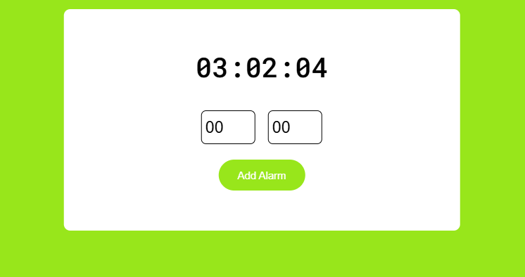
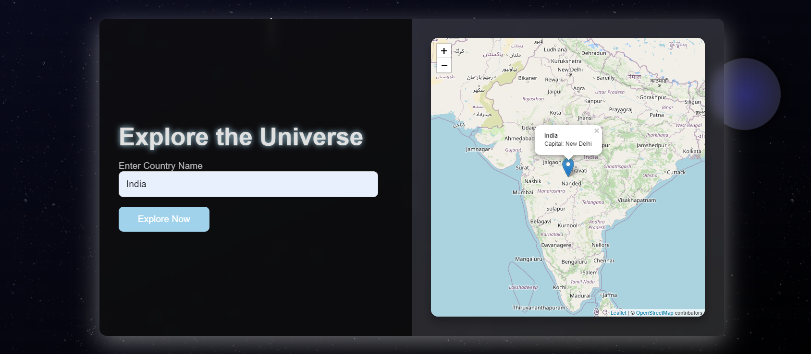

Alarm Web App

The Alarm Web App is a user-friendly application designed to help users set, manage, and customize their alarms with ease. Featuring a sleek and modern interface, this web app allows users to create multiple alarms, set recurring schedules, and choose their preferred notification sounds. Built with responsive design principles, it ensures a seamless experience on both desktop and mobile devices. The project showcases my skills in front-end development using HTML, CSS, and JavaScript, while also demonstrating my ability to implement real-time functionalities. Whether you're waking up in the morning or reminding yourself of important tasks, this app is a reliable companion.
Tech Stack: HTML, CSS, JavaScript
View Project
World Search

World Search is an innovative web application that allows users to explore geographical data and information from around the globe. With a focus on user interactivity, this project integrates APIs to provide real-time search results, including maps, points of interest, and demographic data. The app features a clean and intuitive interface, enabling users to easily navigate and discover locations of interest. Built using Python and Django for the backend, coupled with HTML and CSS for the frontend, World Search demonstrates my capabilities in full-stack development. Whether planning a trip or conducting research, users will find this app an invaluable resource.
Tech Stack: Python, Django, HTML, CSS
View Project
Portfolio Website

This portfolio website showcases my skills, projects, and experiences in a visually appealing manner. It is designed to be responsive and user-friendly, allowing visitors to navigate through my work with ease. The site includes sections for my resume, project details, and a contact form for inquiries. Built with HTML, CSS, and JavaScript, it emphasizes my commitment to creating engaging and accessible web experiences.
Tech Stack: HTML, CSS, JavaScript
View Project